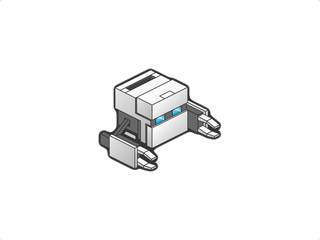
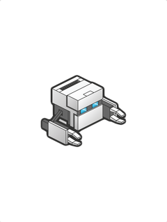
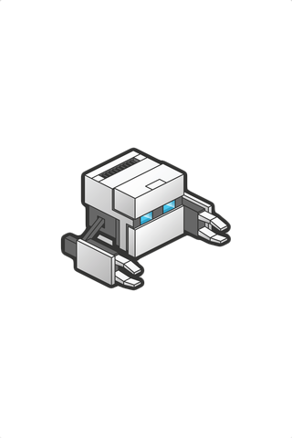
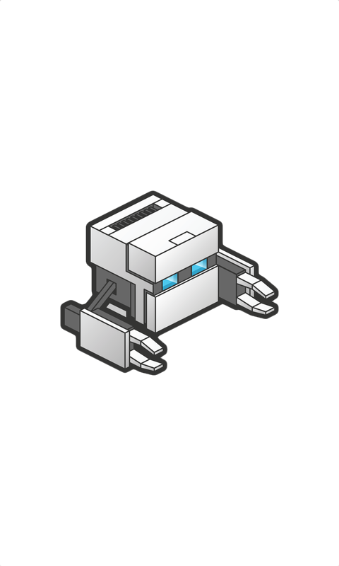
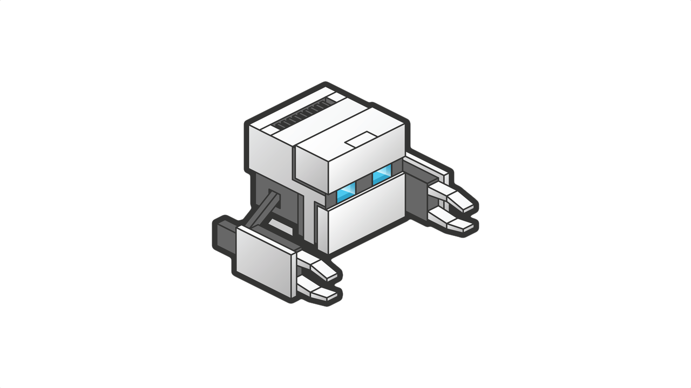
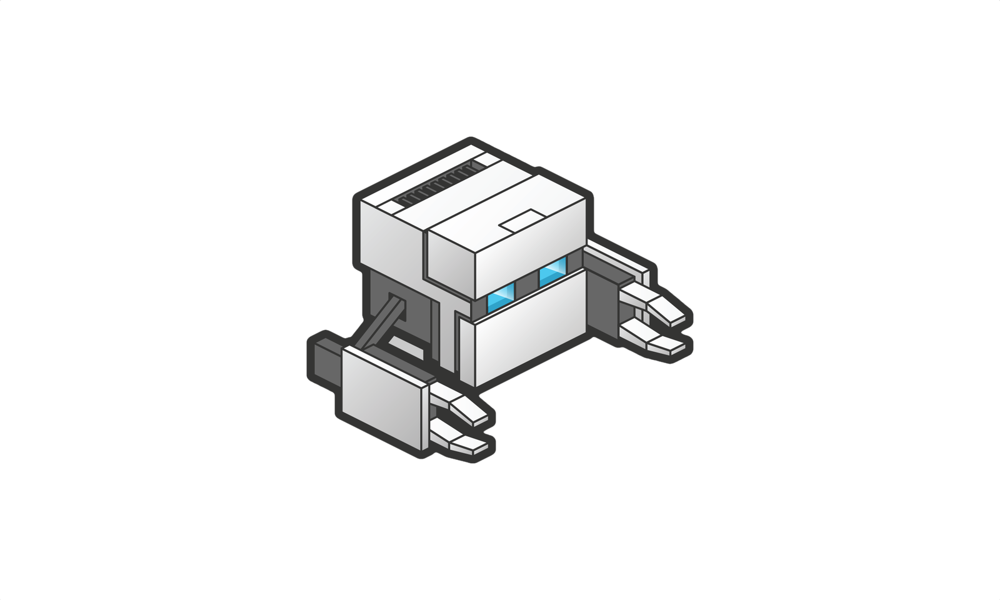
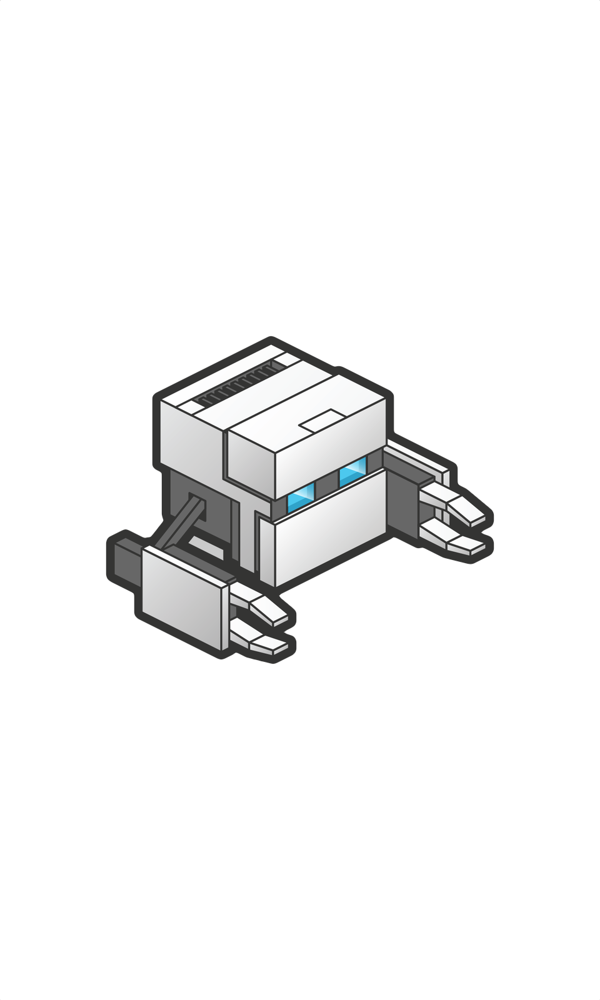
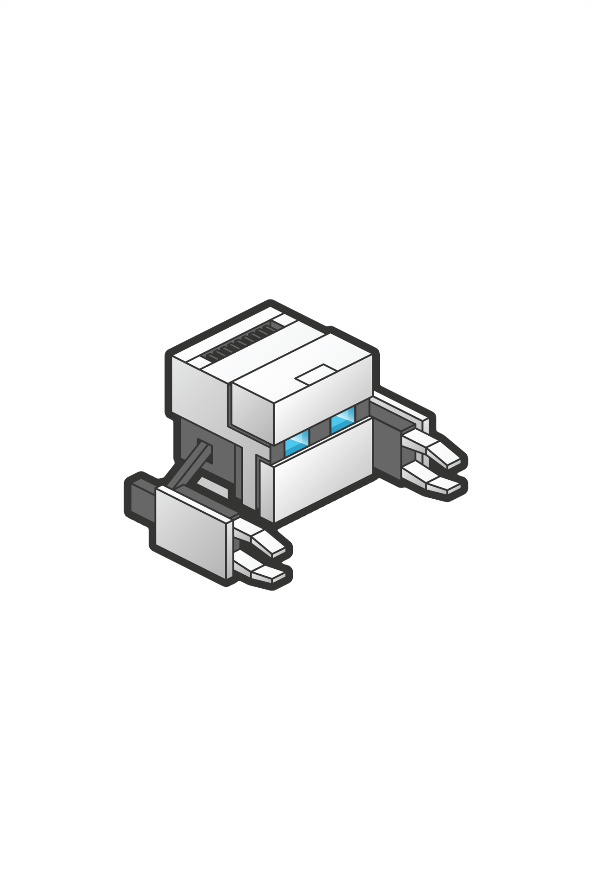

Overview
| Correctness | |
| 2 | warning DefaultLocale: Implied default locale in case conversion |
| 2 | warning
ExifInterface: Using android.media.ExifInterface |
| 1 | warning OldTargetApi: Target SDK attribute is not targeting latest version |
| 3 | warning
SdCardPath: Hardcoded reference to /sdcard |
| 5 | warning SimpleDateFormat: Implied locale in date format |
| 1 | warning ManifestOrder: Incorrect order of elements in manifest |
| 2 | warning GradleDependency: Obsolete Gradle Dependency |
| 1 | warning GradleDynamicVersion: Gradle Dynamic Version |
| 2 | warning GradleOverrides: Value overridden by Gradle build script |
| Security | |
| 2 | warning HardwareIds: Hardware Id Usage |
| 1 | warning
SetWorldWritable: File.setWritable() used to make file world-writable |
| 2 | warning AllowBackup: AllowBackup/FullBackupContent Problems |
| Performance | |
| 1 | warning
Recycle: Missing recycle() calls |
| 11 | warning ObsoleteSdkInt: Obsolete SDK_INT Version Check |
| 5 | warning UnusedResources: Unused resources |
| Usability:Icons | |
| 1 | warning IconDipSize: Icon density-independent size validation |
| Usability | |
| 1 | warning GoogleAppIndexingWarning: Missing support for Firebase App Indexing |
| Internationalization:Bidirectional Text | |
| 2 | warning RtlHardcoded: Using left/right instead of start/end attributes |
| Disabled Checks (23) |
Implied default locale in case conversion
../../src/main/java/org/apache/cordova/networkinformation/NetworkManager.java:248:
245 if (info != null) { 246 String type = info.getTypeName().toLowerCase(Locale.US); 247 248 LOG.d(LOG_TAG, "toLower : " + type.toLowerCase()); 249 LOG.d(LOG_TAG, "wifi : " + WIFI); 250 if (type.equals(WIFI)) { 251 return TYPE_WIFI;../../src/main/java/org/apache/cordova/networkinformation/NetworkManager.java:253:
250 if (type.equals(WIFI)) { 251 return TYPE_WIFI; 252 } 253 else if (type.toLowerCase().equals(TYPE_ETHERNET) || type.toLowerCase().startsWith(TYPE_ETHERNET_SHORT)) { 254 return TYPE_ETHERNET; 255 } 256 else if (type.equals(MOBILE) || type.equals(CELLULAR)) {
DefaultLocale
Correctness
Warning
Priority 6/10
Using android.media.ExifInterface
../../src/main/java/org/apache/cordova/camera/CameraLauncher.java:54:
51 import android.graphics.Bitmap.CompressFormat; 52 import android.graphics.BitmapFactory; 53 import android.graphics.Matrix; 54 import android.media.ExifInterface; 55 import android.media.MediaScannerConnection; 56 import android.media.MediaScannerConnection.MediaScannerConnectionClient; 57 import android.net.Uri;../../src/main/java/org/apache/cordova/camera/ExifHelper.java:23:
20 21 import java.io.IOException; 22 23 import android.media.ExifInterface; 24 25 public class ExifHelper { 26 private String aperture = null;
ExifInterface
Correctness
Warning
Priority 6/10
Target SDK attribute is not targeting latest version
../../src/main/AndroidManifest.xml:16:
13 <meta-data android:name="android.support.FILE_PROVIDER_PATHS" android:resource="@xml/provider_paths" /> 14 </provider> 15 </application> 16 <uses-sdk android:minSdkVersion="14" android:targetSdkVersion="27" /> 17 <uses-permission android:name="android.permission.WRITE_EXTERNAL_STORAGE" /> 18 <uses-permission android:name="android.permission.ACCESS_COARSE_LOCATION" /> 19 <uses-permission android:name="android.permission.ACCESS_FINE_LOCATION" />
OldTargetApi
Correctness
Warning
Priority 6/10
Hardcoded reference to /sdcard
../../src/main/java/org/apache/cordova/media/AudioPlayer.java:114:
111 if (Environment.getExternalStorageState().equals(Environment.MEDIA_MOUNTED)) { 112 tempFileName = Environment.getExternalStorageDirectory().getAbsolutePath() + "/tmprecording-" + System.currentTimeMillis() + ".3gp"; 113 } else { 114 tempFileName = "/data/data/" + handler.cordova.getActivity().getPackageName() + "/cache/tmprecording-" + System.currentTimeMillis() + ".3gp"; 115 } 116 return tempFileName; 117 }../../src/main/java/org/apache/cordova/media/AudioPlayer.java:191:
188 if (Environment.getExternalStorageState().equals(Environment.MEDIA_MOUNTED)) { 189 file = Environment.getExternalStorageDirectory().getAbsolutePath() + File.separator + file; 190 } else { 191 file = "/data/data/" + handler.cordova.getActivity().getPackageName() + "/cache/" + file; 192 } 193 }../../src/main/java/org/apache/cordova/file/FileUtils.java:204:
201 tempRoot = Environment.getExternalStorageDirectory().getAbsolutePath() + 202 "/Android/data/" + packageName + "/cache/"; 203 } else { 204 persistentRoot = "/data/data/" + packageName; 205 } 206 this.configured = true; 207 }
SdCardPath
Correctness
Warning
Priority 6/10
Implied locale in date format
../../src/main/java/org/apache/cordova/camera/CameraLauncher.java:600:
597 } 598 599 private String getPicturesPath() { 600 String timeStamp = new SimpleDateFormat("yyyyMMdd_HHmmss").format(new Date()); 601 String imageFileName = "IMG_" + timeStamp + (this.encodingType == JPEG ? ".jpg" : ".png"); 602 File storageDir = Environment.getExternalStoragePublicDirectory( 603 Environment.DIRECTORY_PICTURES);../../src/main/java/org/apache/cordova/camera/CameraLauncher.java:636:
633 realPath.substring(realPath.lastIndexOf('/') + 1) : 634 "modified." + (this.encodingType == JPEG ? "jpg" : "png"); 635 636 String timeStamp = new SimpleDateFormat("yyyyMMdd_HHmmss").format(new Date()); 637 //String fileName = "IMG_" + timeStamp + (this.encodingType == JPEG ? ".jpg" : ".png"); 638 String modifiedPath = getTempDirectoryPath() + "/" + fileName;../../src/main/java/org/apache/cordova/camera/CameraLauncher.java:970:
967 InputStream fileStream = FileHelper.getInputStreamFromUriString(imageUrl, cordova); 968 if (fileStream != null) { 969 // Generate a temporary file 970 String timeStamp = new SimpleDateFormat("yyyyMMdd_HHmmss").format(new Date()); 971 String fileName = "IMG_" + timeStamp + (this.encodingType == JPEG ? ".jpg" : ".png"); 972 localFile = new File(getTempDirectoryPath() + fileName); 973 galleryUri = Uri.fromFile(localFile);../../src/main/java/org/apache/cordova/globalization/Globalization.java:239:
236 237 //get formatting pattern from android device (Will only have device specific formatting for short form of date) or options supplied 238 JSONObject datePattern = getDatePattern(options); 239 SimpleDateFormat fmt = new SimpleDateFormat(datePattern.getString("pattern")); 240 241 //return formatted date 242 return obj.put("value",fmt.format(date));../../src/main/java/org/apache/cordova/globalization/Globalization.java:268:
265 Date date; 266 try{ 267 //get format pattern from android device (Will only have device specific formatting for short form of date) or options supplied 268 DateFormat fmt = new SimpleDateFormat(getDatePattern(options).getString("pattern")); 269 270 //attempt parsing string based on user preferences 271 date = fmt.parse(options.getJSONObject(0).get(DATESTRING).toString());
SimpleDateFormat
Correctness
Warning
Priority 6/10
Incorrect order of elements in manifest
../../src/main/AndroidManifest.xml:16:
13 <meta-data android:name="android.support.FILE_PROVIDER_PATHS" android:resource="@xml/provider_paths" /> 14 </provider> 15 </application> 16 <uses-sdk android:minSdkVersion="14" android:targetSdkVersion="27" /> 17 <uses-permission android:name="android.permission.WRITE_EXTERNAL_STORAGE" /> 18 <uses-permission android:name="android.permission.ACCESS_COARSE_LOCATION" /> 19 <uses-permission android:name="android.permission.ACCESS_FINE_LOCATION" />
ManifestOrder
Correctness
Warning
Priority 5/10
Obsolete Gradle Dependency
../../build.gradle:32:
29 } 30 31 dependencies { 32 classpath 'com.android.tools.build:gradle:3.0.1' 33 } 34 }../../build.gradle:268:
265 implementation fileTree(dir: 'libs', include: '*.jar') 266 // SUB-PROJECT DEPENDENCIES START 267 implementation(project(path: ":CordovaLib")) 268 compile "com.android.support:support-v4:24.1.1+" 269 // SUB-PROJECT DEPENDENCIES END 270 }
GradleDependency
Correctness
Warning
Priority 4/10
Gradle Dynamic Version
../../build.gradle:268:
265 implementation fileTree(dir: 'libs', include: '*.jar') 266 // SUB-PROJECT DEPENDENCIES START 267 implementation(project(path: ":CordovaLib")) 268 compile "com.android.support:support-v4:24.1.1+" 269 // SUB-PROJECT DEPENDENCIES END 270 }
GradleDynamicVersion
Correctness
Warning
Priority 4/10
Value overridden by Gradle build script
../../src/main/AndroidManifest.xml:2:
1 <?xml version='1.0' encoding='utf-8'?> 2 <manifest android:hardwareAccelerated="true" android:versionCode="10000" android:versionName="1.0.0" package="com.phonegap.batteryandnetwork" xmlns:android="http://schemas.android.com/apk/res/android"> 3 <supports-screens android:anyDensity="true" android:largeScreens="true" android:normalScreens="true" android:resizeable="true" android:smallScreens="true" android:xlargeScreens="true" /> 4 <uses-permission android:name="android.permission.INTERNET" /> 5 <application android:hardwareAccelerated="true" android:icon="@mipmap/icon" android:label="@string/app_name" android:supportsRtl="true">../../src/main/AndroidManifest.xml:16:
13 <meta-data android:name="android.support.FILE_PROVIDER_PATHS" android:resource="@xml/provider_paths" /> 14 </provider> 15 </application> 16 <uses-sdk android:minSdkVersion="14" android:targetSdkVersion="27" /> 17 <uses-permission android:name="android.permission.WRITE_EXTERNAL_STORAGE" /> 18 <uses-permission android:name="android.permission.ACCESS_COARSE_LOCATION" /> 19 <uses-permission android:name="android.permission.ACCESS_FINE_LOCATION" />
GradleOverrides
Correctness
Warning
Priority 4/10
Hardware Id Usage
../../src/main/java/org/apache/cordova/device/Device.java:112:
109 * @return 110 */ 111 public String getUuid() { 112 String uuid = Settings.Secure.getString(this.cordova.getActivity().getContentResolver(), android.provider.Settings.Secure.ANDROID_ID); 113 return uuid; 114 }../../src/main/java/org/apache/cordova/device/Device.java:132:
129 } 130 131 public String getSerialNumber() { 132 String serial = android.os.Build.SERIAL; 133 return serial; 134 }
HardwareIds
Security
Warning
Priority 6/10
File.setWritable() used to make file world-writable
../../src/main/java/org/apache/cordova/mediacapture/Capture.java:287:
284 285 private static void createWritableFile(File file) throws IOException { 286 file.createNewFile(); 287 file.setWritable(true, false); 288 } 289 290 /**
SetWorldWritable
Security
Warning
Priority 6/10
AllowBackup/FullBackupContent Problems
../../src/main/AndroidManifest.xml:5:
2 <manifest android:hardwareAccelerated="true" android:versionCode="10000" android:versionName="1.0.0" package="com.phonegap.batteryandnetwork" xmlns:android="http://schemas.android.com/apk/res/android"> 3 <supports-screens android:anyDensity="true" android:largeScreens="true" android:normalScreens="true" android:resizeable="true" android:smallScreens="true" android:xlargeScreens="true" /> 4 <uses-permission android:name="android.permission.INTERNET" /> 5 <application android:hardwareAccelerated="true" android:icon="@mipmap/icon" android:label="@string/app_name" android:supportsRtl="true"> 6 <activity android:configChanges="orientation|keyboardHidden|keyboard|screenSize|locale" android:label="@string/activity_name" android:launchMode="singleTop" android:name="MainActivity" android:theme="@android:style/Theme.DeviceDefault.NoActionBar" android:windowSoftInputMode="adjustResize"> 7 <intent-filter android:label="@string/launcher_name"> 8 <action android:name="android.intent.action.MAIN" />../../src/main/AndroidManifest.xml:5:
2 <manifest android:hardwareAccelerated="true" android:versionCode="10000" android:versionName="1.0.0" package="com.phonegap.batteryandnetwork" xmlns:android="http://schemas.android.com/apk/res/android"> 3 <supports-screens android:anyDensity="true" android:largeScreens="true" android:normalScreens="true" android:resizeable="true" android:smallScreens="true" android:xlargeScreens="true" /> 4 <uses-permission android:name="android.permission.INTERNET" /> 5 <application android:hardwareAccelerated="true" android:icon="@mipmap/icon" android:label="@string/app_name" android:supportsRtl="true"> 6 <activity android:configChanges="orientation|keyboardHidden|keyboard|screenSize|locale" android:label="@string/activity_name" android:launchMode="singleTop" android:name="MainActivity" android:theme="@android:style/Theme.DeviceDefault.NoActionBar" android:windowSoftInputMode="adjustResize"> 7 <intent-filter android:label="@string/launcher_name"> 8 <action android:name="android.intent.action.MAIN" />
AllowBackup
Security
Warning
Priority 3/10
Missing recycle() calls
../../src/main/java/org/apache/cordova/camera/FileHelper.java:150:
147 String result = null; 148 149 try { 150 Cursor cursor = context.getContentResolver().query(contentUri, proj, null, null, null); 151 int column_index = cursor.getColumnIndexOrThrow(MediaStore.Images.Media.DATA); 152 cursor.moveToFirst(); 153 result = cursor.getString(column_index);
Recycle
Performance
Warning
Priority 7/10
Obsolete SDK_INT Version Check
../../src/main/java/org/apache/cordova/mediacapture/Capture.java:299:
296 } else { 297 Intent intent = new Intent(android.provider.MediaStore.ACTION_VIDEO_CAPTURE); 298 299 if(Build.VERSION.SDK_INT > 7){ 300 intent.putExtra("android.intent.extra.durationLimit", req.duration); 301 intent.putExtra("android.intent.extra.videoQuality", req.quality); 302 }../../src/main/java/org/apache/cordova/camera/FileHelper.java:55:
52 public static String getRealPath(Uri uri, CordovaInterface cordova) { 53 String realPath = null; 54 55 if (Build.VERSION.SDK_INT < 11) 56 realPath = FileHelper.getRealPathFromURI_BelowAPI11(cordova.getActivity(), uri); 57 58 // SDK >= 11../../src/main/java/org/apache/cordova/globalization/Globalization.java:105:
102 }else if(action.equalsIgnoreCase(GETDATEPATTERN)){ 103 obj = getDatePattern(data); 104 }else if(action.equalsIgnoreCase(GETDATENAMES)){ 105 if (android.os.Build.VERSION.SDK_INT < android.os.Build.VERSION_CODES.GINGERBREAD) { 106 throw new GlobalizationError(GlobalizationError.UNKNOWN_ERROR); 107 } else { 108 obj = getDateNames(data);../../src/main/java/org/apache/cordova/inappbrowser/InAppBrowser.java:350:
347 @SuppressLint("NewApi") 348 @Override 349 public void run() { 350 if (Build.VERSION.SDK_INT < Build.VERSION_CODES.KITKAT) { 351 // This action will have the side-effect of blurring the currently focused element 352 inAppWebView.loadUrl("javascript:" + finalScriptToInject); 353 } else {../../src/main/java/org/apache/cordova/inappbrowser/InAppBrowser.java:638:
635 Resources activityRes = cordova.getActivity().getResources(); 636 int backResId = activityRes.getIdentifier("ic_action_previous_item", "drawable", cordova.getActivity().getPackageName()); 637 Drawable backIcon = activityRes.getDrawable(backResId); 638 if (Build.VERSION.SDK_INT >= 16) 639 back.setBackground(null); 640 else 641 back.setBackgroundDrawable(null);+ 6 More Occurrences...
ObsoleteSdkInt
Performance
Warning
Priority 6/10
Unused resources
../../src/main/res/xml/config.xml:2:
../../src/main/res/drawable-hdpi/ic_action_previous_item.png:
../../src/main/res/drawable-hdpi/ic_action_remove.png:
../../src/main/res/drawable-land-hdpi/screen.png:
1 <?xml version='1.0' encoding='utf-8'?> 2 <widget id="com.phonegap.batteryandnetwork" version="1.0.0" xmlns="http://www.w3.org/ns/widgets" xmlns:gap="http://phonegap.com/ns/1.0"> 3 <feature name="Battery"> 4 <param name="android-package" value="org.apache.cordova.batterystatus.BatteryListener" /> 5 </feature>../../src/main/res/drawable-hdpi/ic_action_next_item.png:
{kind=link}

| 
| 
| |
| mdpi | hdpi | xhdpi | xxhdpi |
|---|
{kind=link}
{kind=link}
{kind=link}

| |||
| mdpi | hdpi | xhdpi | xxhdpi |
|---|
{kind=link}
{kind=link}
{kind=link}

| |||
| mdpi | hdpi | xhdpi | xxhdpi |
|---|
{kind=link}
{kind=link}
{kind=link}
{kind=link}
{kind=link}
{kind=link}
{kind=link}
{kind=link}
{kind=link}
{kind=link}
{kind=link}
{kind=link}
|  |  |  |  |  |  |  |  | ||||
| land-ldpi | port-ldpi | land-mdpi | port-mdpi | land-hdpi | port-hdpi | land-xhdpi | port-xhdpi | land-xxhdpi | port-xxhdpi | land-xxxhdpi | port-xxxhdpi |
|---|
UnusedResources
Performance
Warning
Priority 3/10
Icon density-independent size validation
../../src/main/res/drawable-land-ldpi/screen.png:
| land-ldpi | land-mdpi | land-hdpi | land-xhdpi | land-xxhdpi | land-xxxhdpi |
|---|
IconDipSize
Icons
Usability
Warning
Priority 5/10
Missing support for Firebase App Indexing
../../src/main/AndroidManifest.xml:5:
2 <manifest android:hardwareAccelerated="true" android:versionCode="10000" android:versionName="1.0.0" package="com.phonegap.batteryandnetwork" xmlns:android="http://schemas.android.com/apk/res/android"> 3 <supports-screens android:anyDensity="true" android:largeScreens="true" android:normalScreens="true" android:resizeable="true" android:smallScreens="true" android:xlargeScreens="true" /> 4 <uses-permission android:name="android.permission.INTERNET" /> 5 <application android:hardwareAccelerated="true" android:icon="@mipmap/icon" android:label="@string/app_name" android:supportsRtl="true"> 6 <activity android:configChanges="orientation|keyboardHidden|keyboard|screenSize|locale" android:label="@string/activity_name" android:launchMode="singleTop" android:name="MainActivity" android:theme="@android:style/Theme.DeviceDefault.NoActionBar" android:windowSoftInputMode="adjustResize"> 7 <intent-filter android:label="@string/launcher_name"> 8 <action android:name="android.intent.action.MAIN" />
GoogleAppIndexingWarning
Usability
Warning
Priority 5/10
Using left/right instead of start/end attributes
../../src/main/java/org/apache/cordova/inappbrowser/InAppBrowser.java:618:
615 toolbar.setBackgroundColor(android.graphics.Color.LTGRAY); 616 toolbar.setLayoutParams(new RelativeLayout.LayoutParams(LayoutParams.MATCH_PARENT, this.dpToPixels(44))); 617 toolbar.setPadding(this.dpToPixels(2), this.dpToPixels(2), this.dpToPixels(2), this.dpToPixels(2)); 618 toolbar.setHorizontalGravity(Gravity.LEFT); 619 toolbar.setVerticalGravity(Gravity.TOP); 620 621 // Action Button Container layout../../src/main/java/org/apache/cordova/inappbrowser/InAppBrowser.java:624:
621 // Action Button Container layout 622 RelativeLayout actionButtonContainer = new RelativeLayout(cordova.getActivity()); 623 actionButtonContainer.setLayoutParams(new RelativeLayout.LayoutParams(LayoutParams.WRAP_CONTENT, LayoutParams.WRAP_CONTENT)); 624 actionButtonContainer.setHorizontalGravity(Gravity.LEFT); 625 actionButtonContainer.setVerticalGravity(Gravity.CENTER_VERTICAL); 626 actionButtonContainer.setId(Integer.valueOf(1));
RtlHardcoded
Bidirectional Text
Internationalization
Warning
Priority 5/10
Disabled Checks
One or more issues were not run by lint, either
because the check is not enabled by default, or because
it was disabled with a command line flag or via one or
more
lint.xml configuration files in the project directories.
Suppressing Warnings and Errors
Lint errors can be suppressed in a variety of ways:
1. With a
2. With a
3. With a //noinspection comment in the source code
4. With ignore flags specified in the
5. With a
6. With a
7. With the --ignore flag passed to lint.
To suppress a lint warning with an annotation, add a
To suppress a lint warning with a comment, add a
To suppress a lint warning in an XML file, add a
To suppress a lint warning in a
android {
lintOptions {
disable 'TypographyFractions','TypographyQuotes'
}
}
Here we specify a comma separated list of issue id's after the disable command. You can also use
To suppress lint warnings with a configuration XML file, create a file named
The format of the
<?xml version="1.0" encoding="UTF-8"?>
<lint>
<!-- Ignore everything in the test source set -->
<issue id="all">
<ignore path="*/test/*" />
</issue>
<!-- Disable this given check in this project -->
<issue id="IconMissingDensityFolder" severity="ignore" />
<!-- Ignore the ObsoleteLayoutParam issue in the given files -->
<issue id="ObsoleteLayoutParam">
<ignore path="res/layout/activation.xml" />
<ignore path="res/layout-xlarge/activation.xml" />
<ignore regexp="(foo|bar).java" />
</issue>
<!-- Ignore the UselessLeaf issue in the given file -->
<issue id="UselessLeaf">
<ignore path="res/layout/main.xml" />
</issue>
<!-- Change the severity of hardcoded strings to "error" -->
<issue id="HardcodedText" severity="error" />
</lint>
To suppress lint checks from the command line, pass the --ignore flag with a comma separated list of ids to be suppressed, such as:
For more information, see http://g.co/androidstudio/suppressing-lint-warnings
1. With a
@SuppressLint annotation in the Java code2. With a
tools:ignore attribute in the XML file3. With a //noinspection comment in the source code
4. With ignore flags specified in the
build.gradle file, as explained below5. With a
lint.xml configuration file in the project6. With a
lint.xml configuration file passed to lint via the --config flag7. With the --ignore flag passed to lint.
To suppress a lint warning with an annotation, add a
@SuppressLint("id") annotation on the class, method or variable declaration closest to the warning instance you want to disable. The id can be one or more issue id's, such as "UnusedResources" or {"UnusedResources","UnusedIds"}, or it can be "all" to suppress all lint warnings in the given scope.To suppress a lint warning with a comment, add a
//noinspection id comment on the line before the statement with the error.To suppress a lint warning in an XML file, add a
tools:ignore="id" attribute on the element containing the error, or one of its surrounding elements. You also need to define the namespace for the tools prefix on the root element in your document, next to the xmlns:android declaration:xmlns:tools="http://schemas.android.com/tools"To suppress a lint warning in a
build.gradle file, add a section like this:android {
lintOptions {
disable 'TypographyFractions','TypographyQuotes'
}
}
Here we specify a comma separated list of issue id's after the disable command. You can also use
warning or error instead of disable to change the severity of issues.To suppress lint warnings with a configuration XML file, create a file named
lint.xml and place it at the root directory of the module in which it applies.The format of the
lint.xml file is something like the following:<?xml version="1.0" encoding="UTF-8"?>
<lint>
<!-- Ignore everything in the test source set -->
<issue id="all">
<ignore path="*/test/*" />
</issue>
<!-- Disable this given check in this project -->
<issue id="IconMissingDensityFolder" severity="ignore" />
<!-- Ignore the ObsoleteLayoutParam issue in the given files -->
<issue id="ObsoleteLayoutParam">
<ignore path="res/layout/activation.xml" />
<ignore path="res/layout-xlarge/activation.xml" />
<ignore regexp="(foo|bar).java" />
</issue>
<!-- Ignore the UselessLeaf issue in the given file -->
<issue id="UselessLeaf">
<ignore path="res/layout/main.xml" />
</issue>
<!-- Change the severity of hardcoded strings to "error" -->
<issue id="HardcodedText" severity="error" />
</lint>
To suppress lint checks from the command line, pass the --ignore flag with a comma separated list of ids to be suppressed, such as:
$ lint --ignore UnusedResources,UselessLeaf /my/project/pathFor more information, see http://g.co/androidstudio/suppressing-lint-warnings